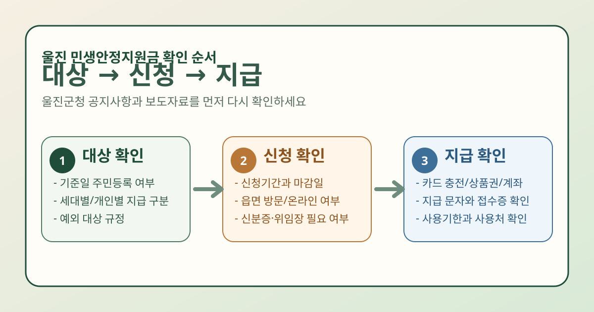

울진 민생안정지원금을 찾는 분들이 지금 가장 궁금한 것은 뉴스 요약보다도 내가 대상인지, 어디서 신청하는지, 언제 어떻게 지급되는지일 가능성이 큽니다. 이 글은 울진군청 공식 페이지에서 현재 공개 확인이 가능한 보도자료 게시판, 공지사항, 통합검색 결과를 기준으로, 최신 공고를 놓치지 않기 위한 확인 순서를 정리한 안내문입니다.
울진군청 통합검색에서는 민생지원금, 민생회복지원금 검색 시 관련 보도자료가 확인되고, 보도자료 게시판에는 2026년 2월 13일 게시된 「울진군 2월 4일 보도자료」 안에 「울진군, 민생경제 회복 위한 지원금 지급 나선다」 항목이 잡힙니다. 다만 지역 지원금은 기준일, 신청기간, 지급수단, 추가 접수 여부가 빠르게 바뀔 수 있으므로 실제 신청 직전에는 반드시 울진군청 공지와 첨부파일을 다시 확인하세요.

울진 민생안정지원금, 먼저 무엇부터 확인해야 하나요?
- 지원금 이름: 민생안정지원금, 민생지원금, 민생회복지원금처럼 검색어가 조금씩 다를 수 있음
- 최신 공고 날짜: 예전 공지와 이번 지급 공지가 섞여 보일 수 있으니 게시일을 먼저 확인
- 대상 기준일: 주민등록 기준일과 실제 거주 조건이 함께 붙는지 확인
- 신청 방식: 읍면 방문인지, 별도 온라인 신청인지, 자동지급인지 확인
- 지급 수단: 지역화폐, 카드 충전, 계좌, 선불카드 중 무엇인지 확인
특히 검색창에 보이는 짧은 요약만 보고 판단하면 신청 대상인데도 서류를 덜 챙기거나, 반대로 자동지급 대상인데 불필요하게 다시 신청하는 경우가 생길 수 있습니다.
대상 여부는 어떻게 확인하나요?
현재 공개 페이지 기준으로는 울진군이 지원금 지급 추진 사실을 보도자료에서 안내하고 있지만, 대상 세부 기준은 최신 공고문이나 첨부파일 확인이 우선입니다. 지역 지원금은 보통 아래 항목이 핵심입니다.
- 기준일 당시 울진군 주민등록 여부
- 세대원 전체 또는 개인별 지급인지
- 결혼, 전입, 출생, 사망 등 변동 사항 반영 기준
- 외국인·재외국민·군복무자 등 예외 규정
그래서 가장 안전한 방법은 울진군청 통합검색에서 관련 공고를 찾은 뒤, 본문과 첨부문서에서 지원대상 항목을 직접 읽는 것입니다. 기준일이 하루만 달라도 결과가 달라질 수 있어 기사 요약만으로는 부족합니다.
신청은 어디서 확인하면 되나요?
울진군처럼 지역 단위 지원금은 보통 공지사항 또는 보도자료에 연결된 첨부 공고에서 신청 경로가 정리됩니다. 확인 순서는 아래처럼 잡으면 빠릅니다.
- 울진군청 통합검색에서
민생지원금또는민생회복지원금검색 - 가장 최근 게시물의 날짜와 제목 확인
- 공지사항 첨부파일이 있으면 우선 열어 신청기간과 접수처 확인
- 읍면 방문 접수인지, 별도 온라인 접수인지 확인
- 신분증, 위임장, 주민등록 관련 서류 등 추가 제출서류 확인
아직 언론에서 언급된 신청률 92.2%만 보고 넘기기보다는, 내 읍면 접수 일정이 이미 끝났는지, 추가 접수나 이의신청이 가능한지를 공식 공지에서 먼저 확인하는 편이 좋습니다.
지급 방식은 어떻게 확인하나요?
지역 지원금은 신청만 끝나면 바로 현금 입금되는 구조가 아닐 수 있습니다. 실제로는 지역화폐나 카드 충전, 선불카드 수령, 계좌 지급 등 방식이 달라질 수 있으니 지급수단과 사용기한을 같이 봐야 합니다.
- 지급일: 신청 후 즉시인지, 순차 지급인지
- 지급수단: 지역사랑상품권, 카드 포인트, 선불카드, 계좌지급 여부
- 사용기한: 소멸 시점이 있는지
- 사용처: 울진군 내 가맹점 제한이 있는지
만약 이미 신청했다면 문자 안내, 접수증, 지역화폐 앱 또는 카드사 알림, 읍면 문의 순서로 확인하는 것이 일반적입니다. 다만 이번 울진 지원금의 정확한 지급 확인 방식은 최신 공고에서 다시 확인해야 합니다.
아직 신청 안 했다면 무엇을 준비하면 좋을까요?
- 본인 신분증
- 대리 신청이면 위임장과 대리인 신분증
- 주소 변동이 있었다면 주민등록 관련 확인 서류
- 지급수단이 카드형이면 본인 명의 카드나 앱 확인
실제 필요 서류는 울진군 최신 공고에 따라 달라질 수 있으므로, 위 목록은 미리 챙겨두면 헛걸음을 줄이는 기본 준비물 정도로 보시면 됩니다.
한 번에 요약하면
- 울진 민생안정지원금은 전국 공통 제도처럼 보면 안 되고 울진군 최신 공고 기준으로 봐야 합니다
- 공식 페이지에서 현재 확인 가능한 출발점은 울진군청 보도자료·공지사항·통합검색입니다
- 대상 기준일, 신청기간, 신청 장소, 지급수단을 한 번에 확인해야 합니다
- 신청률 이슈가 보이더라도 마감 여부와 추가 접수 가능 여부는 공식 공지 재확인이 필요합니다
- 확실하지 않으면 읍면 행정복지센터 또는 울진군청 대표 안내로 최신 안내를 다시 받는 편이 안전합니다
자주 묻는 질문
Q. 울진 민생안정지원금은 자동지급인가요?
현재 공개 확인이 가능한 페이지 기준으로는 지급 추진 사실은 보이지만, 자동지급인지 별도 신청인지에 대한 최신 세부 기준은 공지문 재확인이 필요합니다.
Q. 신청률 92.2%라고 하면 이미 늦은 건가요?
그렇게 단정하면 안 됩니다. 실제로는 마감일, 추가 접수, 이의신청 기간이 따로 있을 수 있으니 울진군청 최신 공지와 읍면 안내를 바로 다시 확인하세요.
Q. 어디서 가장 빨리 확인할 수 있나요?
울진군청 통합검색 → 공지사항 → 보도자료 첨부파일 순서가 가장 빠릅니다. 검색어는 민생지원금, 민생회복지원금 둘 다 넣어보는 편이 좋습니다.